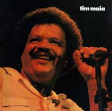
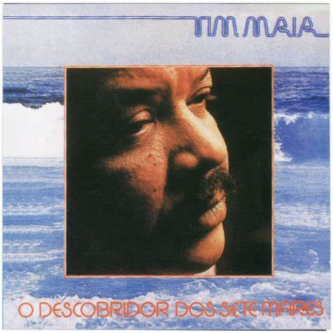

Tim Maia
"Uh! Uh! Uh! Que Beleza!"
Biografia

Tim Maia, um dos maiores ícones da música brasileira, revolucionou com seu estilo único que mistura soul, funk e MPB. Com uma personalidade tão vibrante quanto sua música, Tim marcou a história com sucessos imortais.
Álbuns

Álbum icônico de 1973 com clássicos como "Réu Confesso".

Em 1980, Tim Maia trouxe hits que marcaram época.

O descobridor dos 7 mares, um dos maiores sucessos de sua carreira.